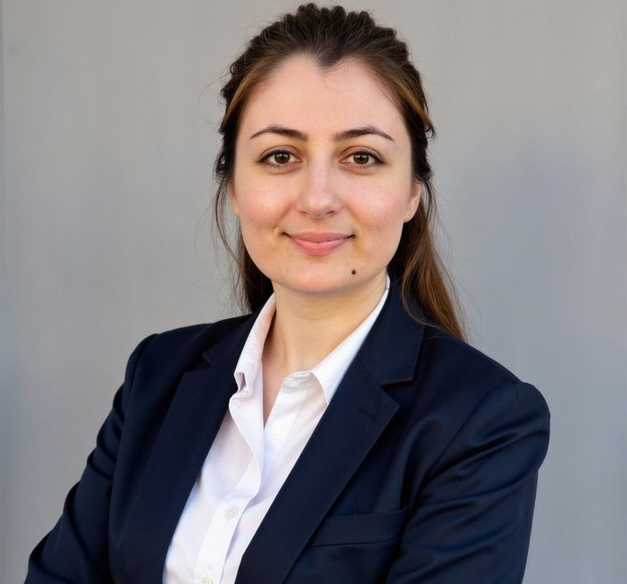

Hasina Jalal
PhD student in Public and International Affairs · University of Pittsburgh

I am a PhD student in Public and International Affairs at the University of Pittsburgh. My research examines women’s political agency under authoritarian rule, with particular attention to authoritarian governance, repression, and transnational political networks. My current work focuses on Afghanistan and Iran and draws on comparative perspectives from other conflict-affected and authoritarian contexts.
My research draws on experience in government, policy, and civil society. Before beginning my doctoral studies, I worked in the Afghan government in research, policy, program design, donor coordination, and electoral administration. I have also worked with civil society organizations and transnational advocacy networks focused on women’s rights and political participation. These experiences inform my interest in how political institutions, security practices, and grassroots actors interact under conditions of authoritarianism and conflict.
Research
My doctoral research examines how women’s political networks form, adapt, and mobilize under authoritarian repression. I use qualitative and mixed-methods approaches, including elite and grassroots interviews, archival and policy analysis, survey experiments, and computational approaches to the study of political networks and digital activism.
Research interests
- International Relations
- Comparative Politics
- Security Studies
- Authoritarianism, repression, and regime change
- Democratization and democratic backsliding
- Women’s political agency and resistance
- Women’s representation in democratic transitions
- Transnational advocacy networks
- Diaspora and exile politics
- Women, Peace, and Security
- Human Rights
PUBLICATIONS
- Jalal, Hasina. Bypassing Gender Apartheid: Public–Private Partnerships for Afghan Women’s Digital Access. SSRN Research Paper Series.
REVISE AND RESUBMIT
- Nawrath, Daniela, Hasina Jalal, and Farzana Danish. “Learning Against the Odds: Understanding Motivation for Education in Times of Crisis: A Case Study of Women’s Education under Taliban Rule.” 2025.
Recipient of the 2026 Carolyn B. Dexter Award, Academy of Management (AOM) and MED-AOM.
WORKING PAPERS
- Jalal, Hasina. “Resistance in Authoritarian Contexts: The Evolution of Transnational Political Networks.”
- AI Under Authoritarianism: Taliban Digital Control and Women’s Online Learning
WORK IN PROGRESS
- Jalal, Hasina. “Structure, Strategy, and Influence: Explaining Variation in Success in Transnational Political Networks.”
- Jalal, Hasina. “Policing the Network: State Security and Surveillance Responses to Transnational Activism.”
POLICY & OTHER PUBLICATIONS
- Jalal, Hasina, and Nazif Shahrani. “The Politics We Inherited: Rethinking Afghanistan’s Political Culture.” 8 AM Media, 2026.
- Jalal, Hasina, and Paulo Casaca. “The Taliban’s Gender Politics: Repression at Home, Performance on the World Stage.” South Asia Democratic Forum, 2025.
- Jalal, Hasina. “How Security Council Politics Trample Women’s Rights.” The National Interest, 2025.
- Jalal, Hasina, Zareen, and Omar Samad. “A 47-Year Arc of Conflict and Abuse: Afghanistan’s Unfinished Reckoning.” World Affairs 21C, 2025.
- Jalal, Hasina. “The World Must Recognize the Reality of Gender Apartheid.” Pittsburgh Post-Gazette, 2025.
Fieldwork and languages
My research draws on fieldwork and interviews with Afghan communities in Afghanistan, as well as policy research conducted in India, Uzbekistan, and Australia throughout my academic and professional career. I speak Persian, Pashto, English, Turkish, and Hindi/Urdu, with additional proficiency in Punjabi, Dutch, Arabic, and Uzbek. These linguistic and research experiences inform my academic work.
Teaching
My teaching experience spans political science, human rights, and economics in both in-person and online undergraduate courses. As an instructor of record, I have taught Human Rights and Human Security: Politics, Law, and Policy; Introduction to Political Science; Principles of Microeconomics; Principles of Macroeconomics; and Women and the Politics of Resistance: Law, Religion, and Power in the Muslim World. This range lets me teach foundational concepts while helping students connect comparative politics, international relations, law, and public policy.
My commitment to education extends beyond the university classroom. Since 2023, I have worked with volunteer instructors in the United States and Europe to organize and teach online English classes and provide mentorship to 200 female students across Afghanistan. That experience has strengthened my ability to teach across different levels of preparation and to sustain meaningful learning in an online setting.
Alongside my research, I have taught courses in political science, economics, human rights, and international affairs at universities in Afghanistan and the United States. I have worked with students from diverse academic and professional backgrounds and am particularly interested in teaching courses on comparative politics, human rights, gender and politics, authoritarianism, security studies, and international affairs.
University teaching
Duquesne University, Pittsburgh, PA, USA
- Human Rights and Human Security: Politics, Law, and Policy
Note: The cohort consisted of 20+ pre-law American students, primarily juniors and seniors.
The New School, NY, USA
- Women and the Politics of Resistance: Law, Religion, and Power in the Muslim World
Note: Teaching a globally diverse cohort of exiled scholars, human rights practitioners, students, researchers, activists, and professionals from around the world, with interests in gender equality, human rights, political resistance, and the intersections of law, religion, and power.
Khurshid University, Kabul, Afghanistan
- Principles of Macroeconomics
- Principles of Microeconomics
Note: The cohort consisted of large classes (45+) of Afghan students, most of whom came from disadvantaged and marginalized backgrounds.
Saber University, Kabul, Afghanistan
- Business English
Note: The cohort consisted primarily of Afghan students from disadvantaged and marginalized backgrounds.
Community and volunteer teaching
English Program & Mentoring for Afghan Girls
Organized and co-taught online English classes and, alongside volunteer instructors in the US and Europe, mentored 200 female students across Afghanistan through their scholarship applications, personal essays, and college applications.
Student feedback
Human Rights and Human Security: Politics, Law, and Policy, Duquesne University
"I really enjoyed hearing her own personal stories when they related to what we were talking about. Hearing the specific stories of people directly affected by the topics not only makes them easier to remember but also more impactful. I also enjoyed hearing from multiple guest speakers..." "She was very down-to-earth and explained concepts in a way that linked to current events..."
"As a student of international relations, this class gave me much insight into issues related to human rights globally. The guest speakers especially helped me understand the job in the field as well..."
"She always made the environment feel very welcoming to express any thoughts about the topic. She brought in guest speakers, had events for us, and got us involved in what she was teaching..."
"I think her background and different experiences really helped aid my learning. She brings a different perspective into the classroom and is not afraid to share that with her students..."
Unsolicited messages from students
"In my three years at Duquesne, there have been very few classes that I've genuinely enjoyed and will remember throughout my academic career, and yours is one of them... I enjoyed your class so much that I'm seriously considering pursuing a field of law related to human rights rather than corporate law, which had been my original plan."
"I am an ambassador for the school... I always tell the prospective students/parents about your class and the guest speakers!! I really appreciated the time that you put into finding guest speakers who are relevant to our interests as students."
"I enjoyed the discussion aspect of the class, and I hope that is something you continue to implement in your future classes because it is something that a lot of classes lack... I genuinely learned a lot in your class and gained new perspectives that I did not have before."
[Full unedited evaluations available on request.]
Background
Education
I am pursuing a PhD in Public and International Affairs at the University of Pittsburgh. Previously,
- Graduate study in M.A., School of Foreign Service, Georgetown University (Grade: Summa cum laude)
- M.A. Women's and Gender Studies, University of Northern Iowa (Fulbright Scholar)
- MBA, American University of Afghanistan (USAID Scholar)
- B.A. Economics, Jamia Millia Islamia (ICCR Scholar)
- Undergraduate study in Economics, Kabul University (Grade: Summa cum laude)
Fellowships and affiliations
I have held fellowships and academic appointments including the Agora Fellowship at the University of Pittsburgh, the Elinor Ostrom Fellowship, and a fellowship at Georgetown University’s School of Foreign Service. I am also affiliated with the New University in Exile Consortium and the Pittsburgh Network for Threatened Scholars.
Policy and public service
Before entering academia, I worked in several public-sector roles in Afghanistan. I served as Research Team Lead and Policy Expert at the Presidential Palace of Afghanistan; Policy Advisor and Director of Program Design and Donor Coordination at the Ministry of Mines and Petroleum; and Election Coordinator at the Independent Election Commission of Afghanistan. These experiences provided practical exposure to governance, institutional reform, policy implementation, and political institutions in a conflict-affected setting and continue to shape my research interests.
[Full CV available upon request.]
Contact
This page is a research and teaching portfolio. For correspondence, please use the contact form on hasinajalal.com.
- Contact